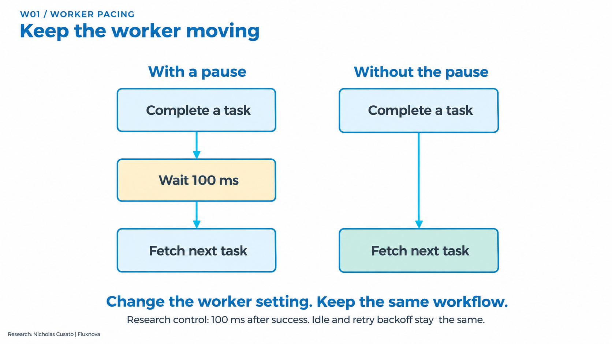
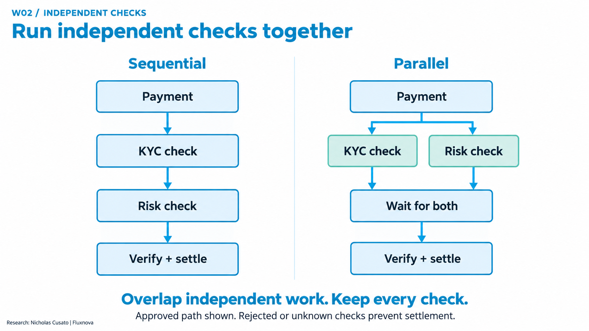
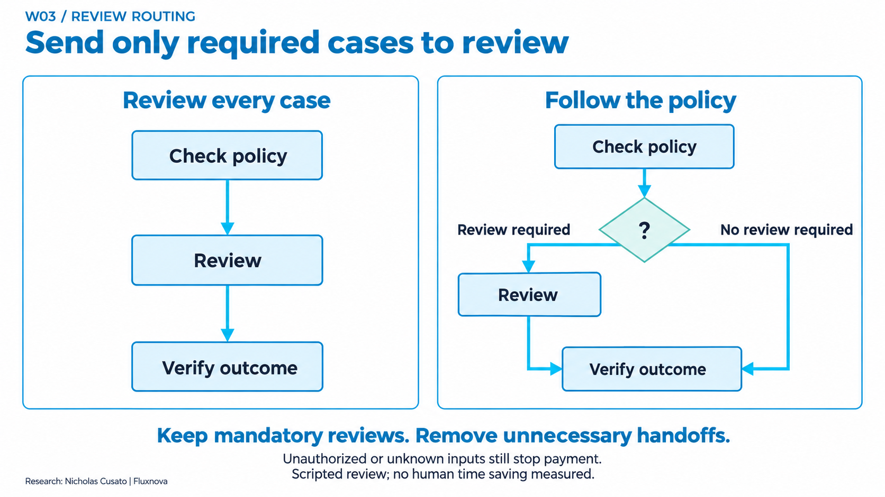
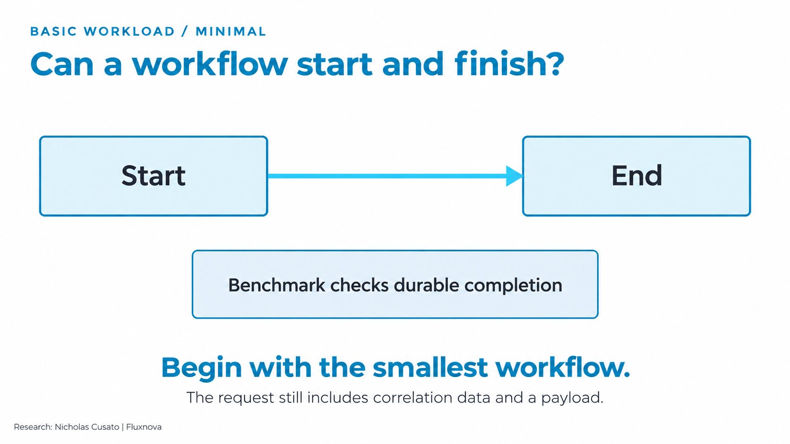
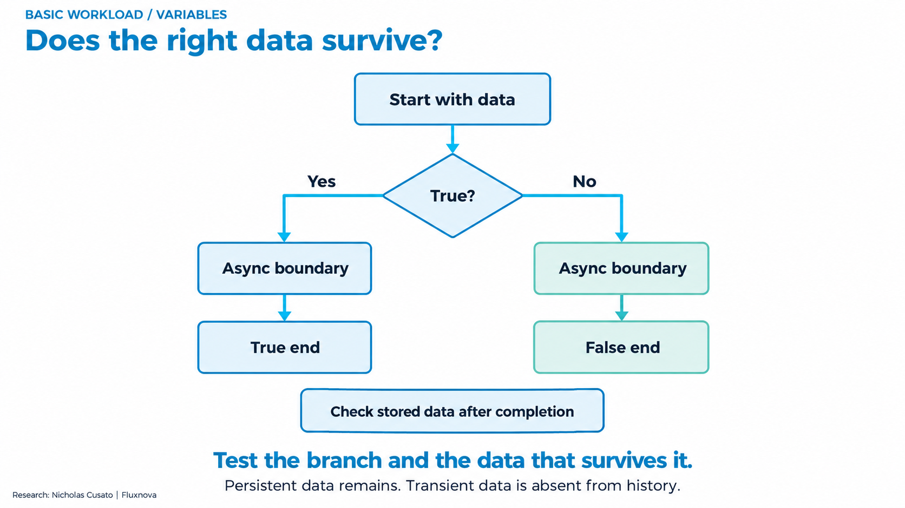
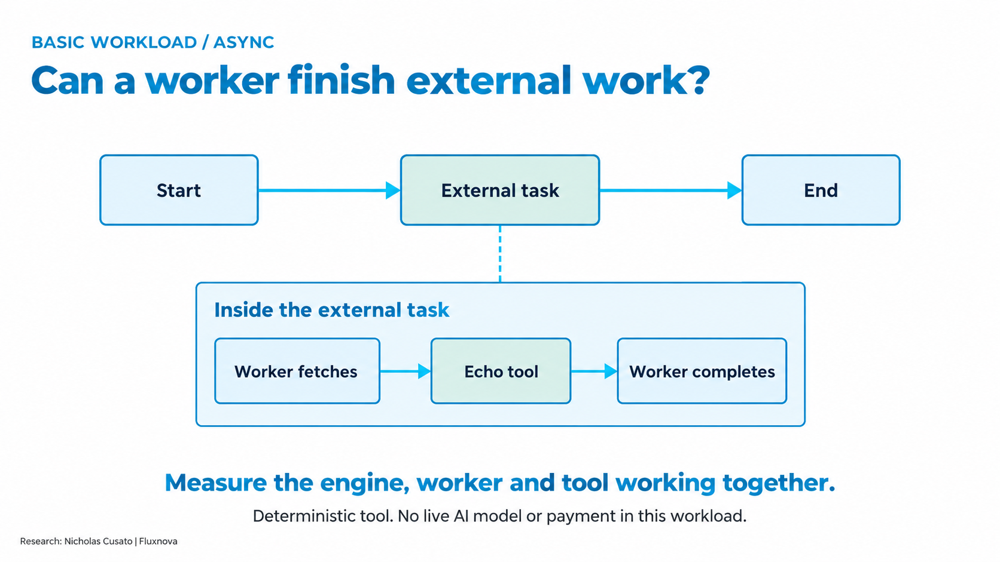
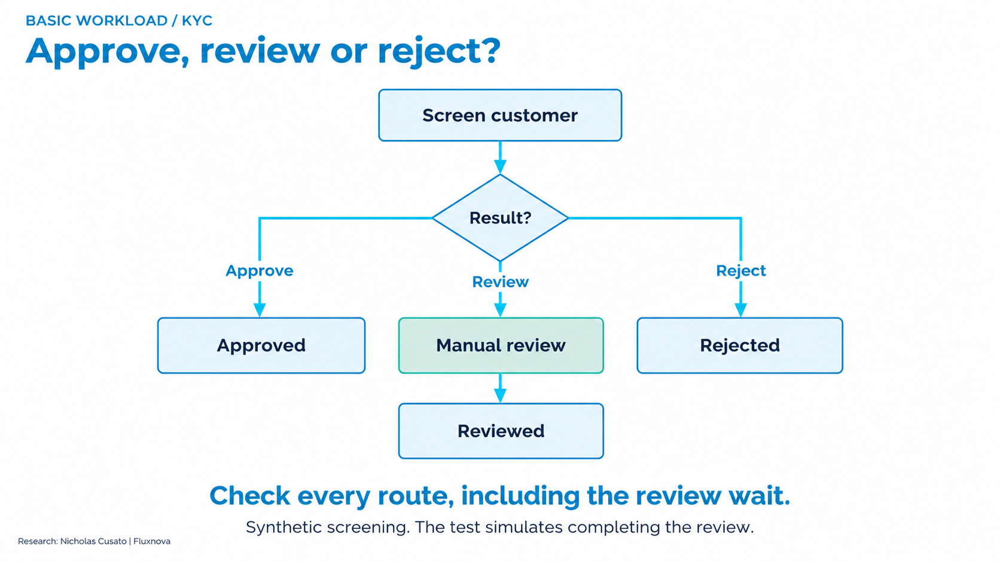
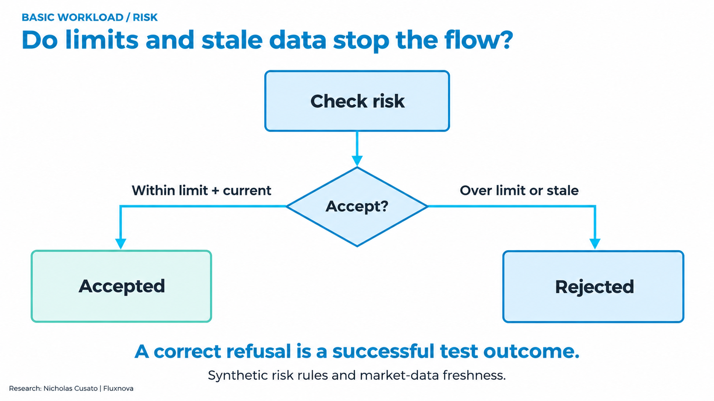
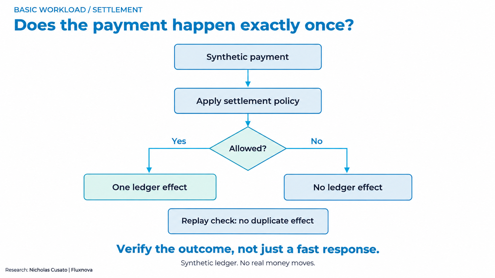

Research by Nicholas Cusato · Fluxnova software by FINOS contributors
What the Fluxnova benchmarks measure
Measure how workflow and runtime changes affect time to a correct, authorized outcome.
A pattern is what runs. A benchmark type is how we test it. A study is one frozen experiment.
Choose a workflow and known inputs. Run it. Verify the final outcome independently. Repeat with one declared change and compare against its own baseline.
What each type answers
- Correctness and control checks
- Does each input reach the right outcome, including rejection, review and replay?
- Repeated latency comparison
- Does one change reduce observed completion time at the same offered load?
- Repeated deadline comparison
- How much correct work finishes before the declared deadline?
- Repeated baseline
- How repeatable is this declared workload before changing a factor?
- Endurance / soak
- Does the declared load remain correct over an extended observation?
- Load and capacity qualification
- Which tested offered rates satisfy the full acceptance contract?
- Finite-population scaling
- How does completion time change when a burst targets more waiting workflows?
- Fault and recovery checks
- What happens to state and business effects during a specific injected failure?
- Measurement diagnostics
- How do observation and instrumentation settings affect what the harness reports?
Reading the results
- Every comparison has its own baseline. Different workloads, hosts or databases cannot be combined into one speedup.
- Correctness and speed answer different questions. A correctly refused payment can pass the test but does not count as a settlement.
- Observed p95 is the latency below which 95% of observed completions fall. It includes the declared observer boundary; it is not the slowest request or a pure engine timer.
- Deadline goodput counts correct outcomes within the deadline per second. Offered load counts starts requested per second. Neither alone establishes maximum capacity.
- Paired changes compare matched runs. A median of five changes is not a pooled percentile, and a range is not a confidence interval.
- Keep every miss, retry, interruption and invalid observation. Partial or resource-constrained results cannot be promoted to a completed capacity claim.
- Synthetic workflows expose controlled mechanisms. Customer traffic, live models, human time and complete cost per correct outcome require separate studies.
CORE · Six basic workflow patterns
Correctness and control checks / functional / Reusable functional building blocks
Reusable workflows and golden checks define the basic test vocabulary.
These are small building blocks a workflow developer can combine and extend.
What changed and how we tested it
- Question
- Can the engine start, persist data, coordinate external work, route decisions and protect a synthetic payment?
- Control
- Declared input and independently expected outcome
- Change
- No performance treatment in this record
- Held fixed
- The BPMN, payload and expected-outcome rules for each case.
- Population
- Minimal, variables, async, KYC, risk and settlement cases.
- Repeats
- not applicable
- Environment
- Local Java/H2 lab or separately qualified OCI deployment.
- Metric
- Correct branch, durable values and exact expected effects.
- Clock
- Functional completion and state checks; no aggregate speedup.
Boundary: A diagram alone is not a completed performance study. The six basic patterns do not each have a repeated latency comparison.
Evidence 1
Reproduction
P01 · Async reference baseline
Repeated baseline / measured / Completed
90,000/90,000 correct and within two seconds; per-run p95 245.7–249.0 ms.
This establishes a repeatable reference for this workflow and setup.
What changed and how we tested it
- Question
- Is the external-task/echo path repeatable at the declared load?
- Control
- Fluxnova 3.0.1, async external-task/echo
- Change
- Repeat the same configuration
- Held fixed
- Synthetic inputs, policy, worker count, resources, database and completion observer within each pair.
- Population
- 10 starts/s; 10-minute warmup then 30-minute measurement.
- Repeats
- Five measurements.
- Environment
- Four-host OCI reference and PostgreSQL.
- Metric
- Observed p95, correctness and correct completions within two seconds.
- Clock
- Scheduled arrival to durable-history completion observation. Completion polling is part of this measurement. Polling: 100 ms.
Boundary: The echo workload contains no payment or live model. This is not maximum capacity or an engine-only microbenchmark.
Evidence 1
Reproduction
W01 · Worker pacing under bursts
Repeated deadline comparison / measured / Completed
Timely payments rose from 600/1,200 to 1,200/1,200. All 2,400 outcomes were correct.
Avoidable worker waiting can consume the deadline even when the payment logic is unchanged.
What changed and how we tested it
- Question
- Does an unnecessary pause after successful work delay later payments?
- Control
- Reconstructed 100 ms delay after success
- Change
- Fetch immediately after success; keep idle/retry backoff
- Held fixed
- Synthetic inputs, policy, worker count, resources, database and completion observer within each pair.
- Population
- 20 arrivals in a one-second burst every ten seconds; mean 2/s. 120-second warmup and 120-second measurement per arm.
- Repeats
- Five matched pairs.
- Environment
- Shared OCI controller compute with separate PostgreSQL; one worker.
- Metric
- Correct payments within two seconds; median paired timely-goodput change.
- Clock
- Scheduled arrival to durable-history completion observation. Completion polling is part of this measurement.
Boundary: The control reconstructs an earlier worker setting. It is not the current default or a customer production baseline.
Evidence 1
Reproduction
W02 · Independent payment checks
Repeated latency comparison / measured / Completed
Observed p95 was 32.1% lower at the median paired change. All 6,000 outcomes were correct and within two seconds.
Overlap independent waits while preserving the requirement that both checks finish.
What changed and how we tested it
- Question
- Can independent KYC and risk checks overlap without weakening payment checks?
- Control
- Sequential KYC then risk
- Change
- Parallel KYC and risk, with a join before settlement
- Held fixed
- Synthetic inputs, policy, worker count, resources, database and completion observer within each pair.
- Population
- Approved synthetic payments at 1/s. KYC waits 400 ms; risk waits 600 ms. 2-minute warmup and 10-minute measurement per arm.
- Repeats
- Five matched pairs.
- Environment
- Shared OCI controller and separate PostgreSQL; two worker slots.
- Metric
- Median of paired percentage changes in observed completion p95.
- Clock
- Scheduled arrival to durable-history completion observation. Completion polling is part of this measurement. Polling: 100 ms.
Boundary: Both arms still delivered 1 timely payment/s. This establishes lower latency at this load, not higher maximum capacity or real-provider latency.
Evidence 1
Reproduction
W02-MIXED · Different outcomes and dependency delays
Repeated deadline comparison / measured / Completed with deadline misses retained
Timely settlements rose from 880 to 1,037 of 1,200; timely refusals fell from 780 to 669 of 1,200. All 6,000 outcomes were correct; 1,648 deadlines were missed.
A change can help one outcome class and hurt another. Keep the outcome breakdown.
What changed and how we tested it
- Question
- Does the parallel-check result hold across settlements, refusals and safe stops?
- Control
- Sequential independent checks
- Change
- Parallel independent checks
- Held fixed
- Synthetic inputs, policy, worker count, resources, database and completion observer within each pair.
- Population
- Five dependency profiles and mixed expected outcomes at 1/s; 600 measured arrivals per arm.
- Repeats
- Five matched pairs.
- Environment
- Matched OCI controller/PostgreSQL setup.
- Metric
- Timely correct settlements/s, with refusals and safe stops reported separately.
- Clock
- Scheduled arrival to durable-history completion observation. Completion polling is part of this measurement. Polling: 100 ms.
Boundary: Equal synthetic coverage is not a customer traffic distribution. The approved-only 32.1% result cannot be applied to this mix.
Evidence 1
Reproduction
W03 · Policy-based review routing
Correctness and control checks / functional / Completed within the scripted corpus
Review tasks fell from 10 to 4. All four mandatory reviews remained and all 20 expected outcomes passed.
This workflow removes avoidable handoffs for the declared policy and case mix.
What changed and how we tested it
- Question
- Can a fixed policy remove unnecessary review tasks while retaining required reviews?
- Control
- Review every case
- Change
- Route only policy-required cases to review
- Held fixed
- Same ten inputs, decision policy, authenticated reviewer checks and final outcome verifier.
- Population
- Ten synthetic cases in each arm.
- Repeats
- One execution of each case per arm; replay probes separately retained.
- Environment
- Local Fluxnova 3.0.1 / Java 21 / H2.
- Metric
- Review-task count and correct expected outcomes.
- Clock
- Scripted reviews; human waiting or working time is not measured.
Boundary: This is a task-count comparison, not measured human time or a 60% staffing saving. The all-review control is deliberately constrained.
Evidence 1
Reproduction
PAY05 · Parallel FX quote requests
Repeated deadline comparison / measured / Completed with retry tradeoff retained
Timely settlements rose from 668/1,530 to 1,530/1,530. All 3,960 outcomes were correct. Parallel runs retained 910 cached backend replays and zero duplicate payment effects.
Overlapping quote waits helps delayed-provider cases. Durable replay handling protects the payment when completion retries occur.
What changed and how we tested it
- Question
- Can parallel requests to three independent quote providers improve timely settlement?
- Control
- Request three synthetic quotes sequentially
- Change
- Request the same quotes in parallel before selection
- Held fixed
- Synthetic inputs, policy, worker count, resources, database and completion observer within each pair. Three worker slots in both arms.
- Population
- 22 cases × three delay profiles; 396 measured arrivals per arm at 0.5/s. 132-second warmup, 792-second measurement and 30-second drain.
- Repeats
- Five matched pairs.
- Environment
- Shared OCI controller and separate PostgreSQL 17.6.
- Metric
- Median paired change in correct settlements within two seconds per second.
- Clock
- Scheduled arrival to durable-history completion observation. Completion polling is part of this measurement. Polling: 100 ms.
Boundary: Sequential runs had zero cached replays. The parallel improvement has a retry tradeoff. Synthetic providers and equal case coverage do not represent a live FX venue or customer distribution.
Evidence 1
Reproduction
JVM · Java 21 versus Java 25
Repeated latency comparison / measured / Completed; earlier stopped study remains separate
Median paired p95 difference: −0.862 ms, range −1.369 to +0.864 ms. All 180,000 outcomes were correct and within two seconds.
The small differences changed sign. This workload did not establish a broad Java 25 performance advantage.
What changed and how we tested it
- Question
- Does the newer Java runtime improve this fixed async workflow?
- Control
- Java 21
- Change
- Java 25
- Held fixed
- Synthetic inputs, policy, worker count, resources, database and completion observer within each pair. Fluxnova 3.0.1 fixed.
- Population
- 10 starts/s; 10-minute warmup and 30-minute measurement per observation.
- Repeats
- Five matched pairs.
- Environment
- Same fixed OCI reference and PostgreSQL.
- Metric
- Median within-pair observed-p95 difference, Java 25 minus Java 21.
- Clock
- Scheduled arrival to durable-history completion observation. Completion polling is part of this measurement. Polling: 100 ms before deadline, 1,000 ms afterward.
Boundary: Five pairs do not prove equivalence, maximum capacity or performance for other workflows. Earlier interrupted observations are not pooled.
Evidence 1
Reproduction
RELEASE · Fluxnova 3.0.1 versus 3.1.1
Repeated latency comparison / measured / Completed; earlier stopped study remains separate
Median paired p95 difference: +0.126 ms, range −0.552 to +1.055 ms. All 180,000 outcomes were correct and within two seconds.
Both releases met this test target. No meaningful speedup or capacity gain was established.
What changed and how we tested it
- Question
- Does the engine release change this async workflow at the same load?
- Control
- Fluxnova 3.0.1
- Change
- Fluxnova 3.1.1 with its required PostgreSQL migration
- Held fixed
- Synthetic inputs, policy, worker count, resources, database and completion observer within each pair. Java 21 fixed.
- Population
- 10 starts/s; 10-minute warmup and 30-minute measurement per observation.
- Repeats
- Five matched pairs.
- Environment
- Same fixed OCI reference; release-specific native schemas.
- Metric
- Median within-pair observed-p95 difference, 3.1.1 minus 3.0.1.
- Clock
- Scheduled arrival to durable-history completion observation. Completion polling is part of this measurement. Polling: 100 ms.
Boundary: This does not prove statistical equivalence, universal compatibility or production sizing. Native schema changes are part of the declared treatment.
Evidence 1
Reproduction
SOAK · Eight-hour async endurance
Endurance / soak / measured / Completed and accepted
All 288,000 measured workflows completed correctly within two seconds.
The reference sustained its declared target during this observation.
What changed and how we tested it
- Question
- Does this workload stay correct through an eight-hour observation?
- Control
- Fixed async reference
- Change
- Extend the observation to eight hours
- Held fixed
- Synthetic inputs, policy, worker count, resources, database and completion observer within each pair.
- Population
- 10 starts/s for 28,800 measured seconds.
- Repeats
- One eight-hour observation.
- Environment
- OCI reference with retained telemetry.
- Metric
- Correctness, deadline outcomes and descriptive time windows.
- Clock
- Scheduled arrival to durable-history completion observation. Completion polling is part of this measurement.
Boundary: One observation does not establish leak-free operation, maximum capacity or a production availability guarantee.
Evidence 1
Reproduction
CAPACITY · Higher-rate confirmation
Load and capacity qualification / partial / 16/s confirmation stopped
The 16/s confirmation is incomplete. 16/s is not qualified.
Three passing observations cannot stand in for a complete five-observation confirmation.
What changed and how we tested it
- Question
- Does the next offered rate satisfy the complete confirmation series?
- Control
- Previously qualified reference rate
- Change
- Higher offered rates with unchanged acceptance rules
- Held fixed
- Synthetic inputs, policy, worker count, resources, database and completion observer within each pair.
- Population
- 16 starts/s confirmation series.
- Repeats
- Five planned observations: three measured passes, one warmup interruption, one unattempted.
- Environment
- OCI reference.
- Metric
- Full-series correctness, deadlines, resources and retained interruptions.
- Clock
- Scheduled arrival to durable-history completion observation. Completion polling is part of this measurement.
Boundary: Maximum sustainable capacity remains open. Do not label a discovery rate or partial confirmation as production capacity.
Evidence 1
Reproduction
FNV06 · Messages, signals and asynchronous batches
Finite-population scaling / partial / 45 cells complete; two headroom flags retained
All 16,650 measured recipients were correct. 43/45 cells passed the headroom gate; batch/1,000 timing comparisons remain unqualified.
Larger finite bursts take longer. Correct final outcomes alone do not qualify every timing comparison.
What changed and how we tested it
- Question
- How does completion grow when the same pattern targets more waiting workflows?
- Control
- 10 intended recipients
- Change
- 100 or 1,000 recipients within each pattern
- Held fixed
- Engine, database, client limits, 100 ms observer and independent outcome rules.
- Population
- Three patterns × three populations × five repeats. 16,650 measured recipients; 180 controls.
- Repeats
- 45 planned and completed cells.
- Environment
- One OCI engine container, one generator/observer and separate PostgreSQL.
- Metric
- Interval bounding cohort completion, with generator/resource qualification.
- Clock
- Delivery start until all intended recipient completions are observed; HTTP acknowledgment and batch bookkeeping are separate.
Boundary: Different routing semantics cannot be ranked as interchangeable implementations. These bursts do not establish arrival-rate capacity, replica scaling or finite ratios when the control interval includes zero.
Evidence 1
Reproduction
FNV07 · Cluster job faults and replay handling
Fault and recovery checks / functional / Functional subset complete
Each six-case run produced the expected three completed, two blocked and one waiting outcomes, with 12 exact effects.
The fault cases exercise coordination and idempotency without losing the expected business state.
What changed and how we tested it
- Question
- Do job retry and failure paths preserve the intended effects?
- Control
- Declared normal and fault cases
- Change
- One and two engine configurations under controlled faults
- Held fixed
- Original immutable case data, expected state and exact-effect checks.
- Population
- Six fault-case definitions per configuration.
- Repeats
- Separate functional configurations; no repeated capacity comparison.
- Environment
- Local H2 plus one/two engines sharing an OCI controller with a private PostgreSQL container.
- Metric
- Completed, blocked and waiting states; attempts and exact effects.
- Clock
- Functional state reconciliation, including eight database tables.
Boundary: Shared-host tests do not establish multi-host availability, failover capacity or a managed-database performance advantage.
Evidence 1
Reproduction
FNV07-TIMING · Native job timing qualification
Correctness and control checks / functional / Local qualification complete
20/20 workflows correct, 60 successful attempts and 60 exact effects.
The timing pipeline is ready for a later controlled performance study.
What changed and how we tested it
- Question
- Can native job timing records be matched to independently correct outcomes?
- Control
- Known normal-case corpus
- Change
- Qualify scheduled-arrival recording and timing verification
- Held fixed
- Original input, job identity and exact effects.
- Population
- 20 workflows at 2/s over ten seconds.
- Repeats
- One qualification observation plus six-case fault regression.
- Environment
- Local Java/H2.
- Metric
- Complete timing/outcome joins, successful attempts and exact effects.
- Clock
- Scheduled arrival and native stage records, checked for complete coverage.
Boundary: No resource-qualified performance, replica-scaling or capacity claim follows from this local gate.
Evidence 1
Reproduction
AGENT · Agent, reviewer and payment authority
Correctness and control checks / partial / Bounded functional and live-model evidence
Functional checks exercise the control boundaries. A measured agent-versus-rules benefit remains unestablished.
The workflow decides when actions are allowed; a model suggestion is not payment authority.
What changed and how we tested it
- Question
- Can an agent request work while policy, a reviewer and a verifier retain control over payment?
- Control
- Immutable original payment intent and explicit authority
- Change
- Exercise model/tool requests, review, rejection and tampering paths
- Held fixed
- Expected authorized effect and binding to the original request.
- Population
- Synthetic payment and model-provider cases.
- Repeats
- Case coverage; no paired agent-versus-rules experiment.
- Environment
- Separate local/OCI functional studies and bounded live-provider trials.
- Metric
- Expected authorization, decision and exact-effect checks; provider errors retained.
- Clock
- Model, review and workflow stages have separate timing boundaries.
Boundary: Live-provider failures and incomplete coverage remain part of the evidence. These workflow performance percentages are not AI quality or agent-productivity claims.
Evidence 1
Reproduction
RECOVERY · State and dependency recovery
Fault and recovery checks / functional / Bounded failure procedures exercised
Evidence covers specific recovery procedures and retained interruptions.
Recovery must reconcile engine state and payment authority, not only restart a process.
What changed and how we tested it
- Question
- Can the declared recovery procedure restore consistent workflow and payment state?
- Control
- Known state and original authority
- Change
- Inject selected connection, verifier, key or restore failures
- Held fixed
- Immutable intent, checkpoint binding and reconciliation rules.
- Population
- Separate failure-specific procedures.
- Repeats
- Procedure-specific observations, not a general outage distribution.
- Environment
- OCI reference and isolated recovery cells.
- Metric
- State preservation, restored readiness and no unauthorized/duplicate effects.
- Clock
- Failure injection, recovery readiness and reconciliation are separate clocks.
Boundary: No general availability SLA, universal RTO/RPO or production certification follows from these cases.
Evidence 1
Reproduction
OBSERVER · Polling and worker instrumentation
Measurement diagnostics / diagnostic / Historical supporting studies retained
Polling and timing settings belong in the experiment contract.
Faster detection is not automatically faster execution. Keep the measurement method fixed across arms.
What changed and how we tested it
- Question
- How much does the observation method influence reported latency?
- Control
- Declared observer interval or timing output disabled
- Change
- Change only the observer interval or enable timing output
- Held fixed
- Workload and environment within each separate diagnostic study.
- Population
- Separate async and settlement diagnostics.
- Repeats
- Per-study repeats; not pooled with workflow comparisons.
- Environment
- OCI diagnostic configurations.
- Metric
- Observed completion delay, request traffic and stage timing coverage.
- Clock
- Observer polling adds detection delay; worker stage records measure a different boundary.
Boundary: These diagnostics are not interchangeable with payment throughput, agent benefit or the later matched workload studies.
Evidence 1
Reproduction
All nine diagrammed patterns
Six basic building blocks, two timed workflow comparisons and one functional review comparison. Conceptual flowcharts explain the executable BPMN.
D01 · Worker pacing

The payment graph stays the same. The external worker either sleeps after success or immediately fetches the next task. Idle and retry backoff remain.
Meaning: W01 shows more payments meeting the deadline for fixed bursts and one worker. It tests worker scheduling, not a redesigned payment process.
W01
D02 · Parallel checks

Sequential execution waits for KYC before starting risk. Parallel execution starts both independent checks and joins them before payment. Neither check is skipped.
Meaning: W02 shows lower observed latency at 1/s. The mixed follow-up shows that benefits depend on the outcome and dependency delays.
W02
W02-MIXED
D03 · Review routing

A fixed policy routes required cases to a reviewer. Eligible cases can proceed; unauthorized or unknown cases still stop. Final verification remains.
Meaning: W03 reduces tasks from ten to four for its constructed cases and preserves all four mandatory reviews. It does not measure human time saved.
W03
D04 · Minimal workflow

Start and finish a process with the declared correlation data and payload. The checker confirms durable completion.
Meaning: A useful basic readiness check. Its input still contains data, so it is not a zero-variable engine-overhead benchmark.
CORE
D05 · Variables and branching

Choose a branch, cross an asynchronous boundary and inspect persisted values. Persistent and transient data have different expected histories.
Meaning: Correctness requires the right branch and right surviving values. No separate repeated speedup claim belongs to this picture.
CORE
D06 · External task and tool

Fluxnova creates an external task. A worker fetches it, calls the deterministic echo tool and reports completion. The benchmark observes durable history.
Meaning: This is the workload behind P01, the runtime/release comparisons and the soak. Their clocks include worker/tool work and observation.
P01
JVM
RELEASE
SOAK
CAPACITY
D07 · KYC decision and review

Synthetic screening approves, rejects or creates a review wait. The test simulates completion of that review.
Meaning: A correct waiting or rejected state can be a passing test. Real screening quality and human working time remain outside this basic fixture.
CORE
W03
D08 · Risk and freshness

Check a synthetic risk limit and market-data freshness. Accept only when both declared conditions allow it.
Meaning: An expected refusal is correct work, but it is not a settled payment. Report those populations separately.
CORE
W02-MIXED
D09 · Settlement and replay

Check policy before the synthetic ledger effect. Repeating an operation must preserve its original result without paying again.
Meaning: Successful HTTP responses are insufficient: the checker matches amount, beneficiary and effect count to the original intent. No real money moves.
CORE
PAY05
AGENT
RECOVERY